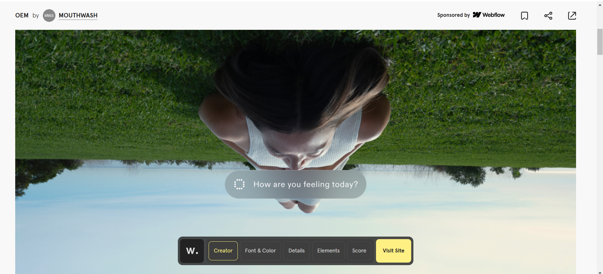
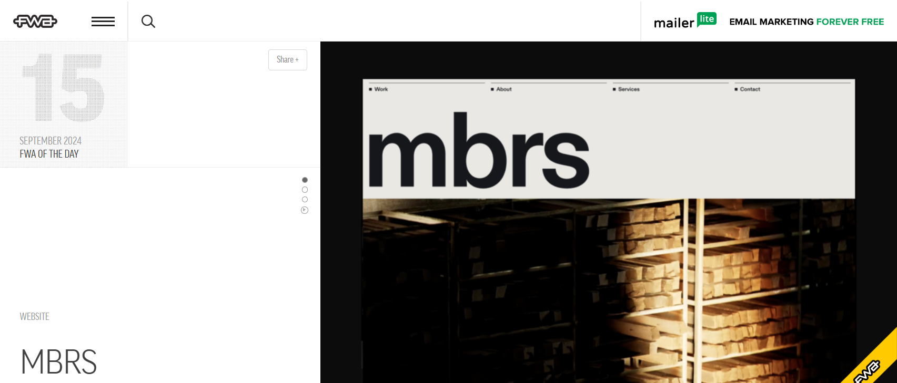

NUEVAS TENDENCIAS EN DISEÑO WEB
Aquí están las webs que más me han gustado de Awwwards, Webby Awards, FWA y CSS Design Awards.
-
CSS Design Awards:
Adrià Paituví — PortfolioEste proyecto me parece una muy buena forma de presentar un portfolio. Me ha gustado la distribución y la jerarquía de tamaños en la web, es una disposición algo alternativa, pero se entiende con claridad.

-
Awwwards:
OEM ProjectEl proyecto OEM me ha gustado porque mezcla elementos 2D con 3D de una forma unificada, resulta muy clara toda la web pero no resulta aburrida por esos guiños al 3D.
 -
Webby Awards:
Making a song with SunoEn cuanto al nominado, me ha gustado la animación interactiva del índice, me parece que ha encontrado una forma de presentar algo que suele ser muy rígido y usual de una forma original.

-
FWA:
MBRS ProjectDe este trabajo, me ha parecido interesante la interacción de los botones con los elementos. Cuando pasas por encima el cursor, cambia de color o cambia el fondo. Esta interacción resulta muy estimulante para el usuario.
